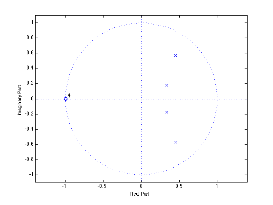
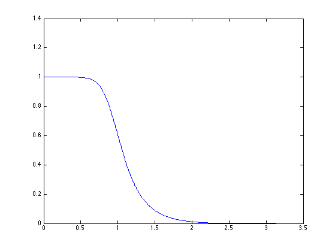
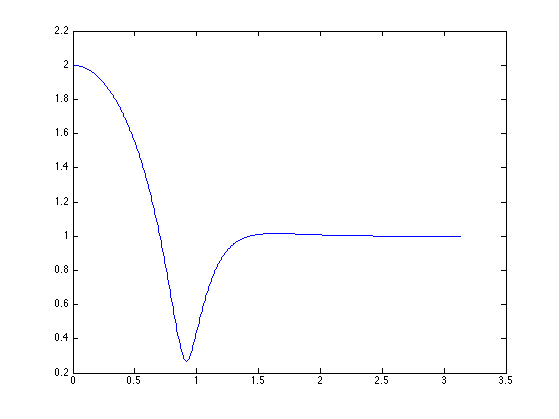
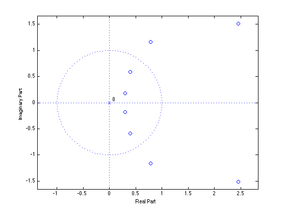
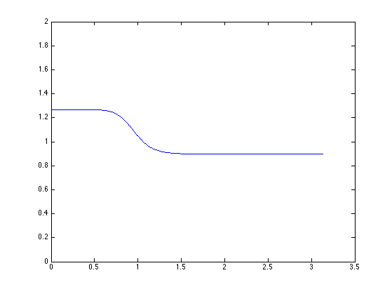
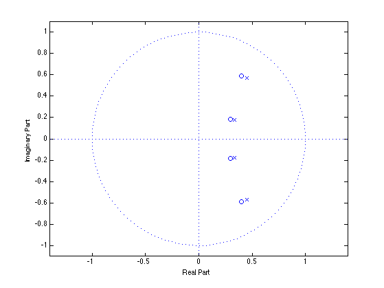

Shelving filters
Convert a low-pass filter to a shelving filter
Ivan Selesnick
Contents
clear all % close all
Start with a low-pass filter
% Low-pass Butterworth filter [b, a] = butter(4, 0.3); % Show pole-zero diagram zplane(b,a)
Show frequency response
[H, om] = freqz(b, a); plot(om, abs(H))
The wrong way
How can we 'lift' the frequency response? Can we add identity?
Id = ones(size(H)); plot(om, abs( Id + H)) % No, adding identity does not give a shelving filter. % This is because H is complex-valued. You can not just add % a constant like this. Putting H in parallel with a direct % path will not give a shelving filter because H is complex.
Use product filter P(z) = H(z)H(1/z)
We can add a constant to the H(om)^2 though, becuase it is real... See class notes..
K1 = 0.5; K2 = 0.5; flip = @(x) x(end:-1:1) % C(z) = K1 B(z) B(1/z) + K2 A(z) A(1/z) c = K1 * conv( b, flip(b) ) + K2 * conv( a, flip(a) ) % Notice that c is an odd-length symmetric sequence (Type I FIR filter). % This is also evident in the zero-diagram (the zeros are in reciprocals % sets) zplane(c)
flip =
@(x)x(end:-1:1)
c =
0.0383 -0.3007 1.0716 -2.1046 2.6790 -2.1046 1.0716 -0.3007 0.0383
 Find B2(z) such that B2(z) B2(1/z) = C(z),
i.e., such that conv(b2, flip(b2)) = c
% We can do this by dividing the roots of C into two groups. % For example, (1) the zeros inside the unit circle, % and (2) the zeros outside the unit circle r = roots(c) % roots of C(z) k = abs(r) < 1 % Locate the roots of C(z) inside unit circle r(k) % These are the roots of C(z) inside unit cirlce abs(r(k)) % Verify that they are inside the unit cirlce abs() should be less than 1 b2 = poly(r(k)) % Create b2 from these roots
r =
2.4509 + 1.5078i
2.4509 - 1.5078i
0.7824 + 1.1621i
0.7824 - 1.1621i
0.3987 + 0.5921i
0.3987 - 0.5921i
0.2960 + 0.1821i
0.2960 - 0.1821i
k =
0
0
0
0
1
1
1
1
ans =
0.3987 + 0.5921i
0.3987 - 0.5921i
0.2960 + 0.1821i
0.2960 - 0.1821i
ans =
0.7138
0.7138
0.3475
0.3475
b2 =
1.0000 -1.3893 1.1022 -0.3979 0.0615
Shelving filter
Using same denominator as H(z). Use new numerator B2(z). (Same poles, new zeros).
[H2, om] = freqz(b2, a); plot(om, abs(H2)) ylim([0 2]) % This is a shelving filter. % How are the levels in the two bands related to the % constants K1 and K2 ??
zplane(b2, a) % The zeros are close to the poles. % It can be expected since the frequency response is mostly % quite flat, so the poles and zeros are close to canceleing.